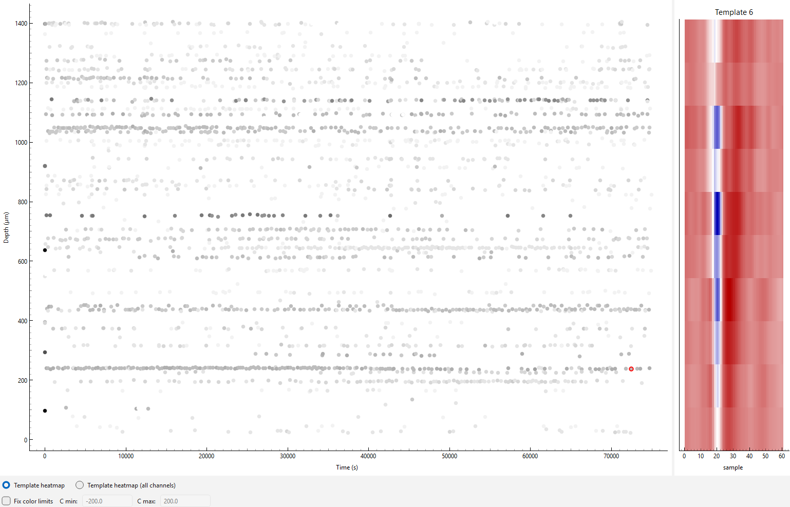
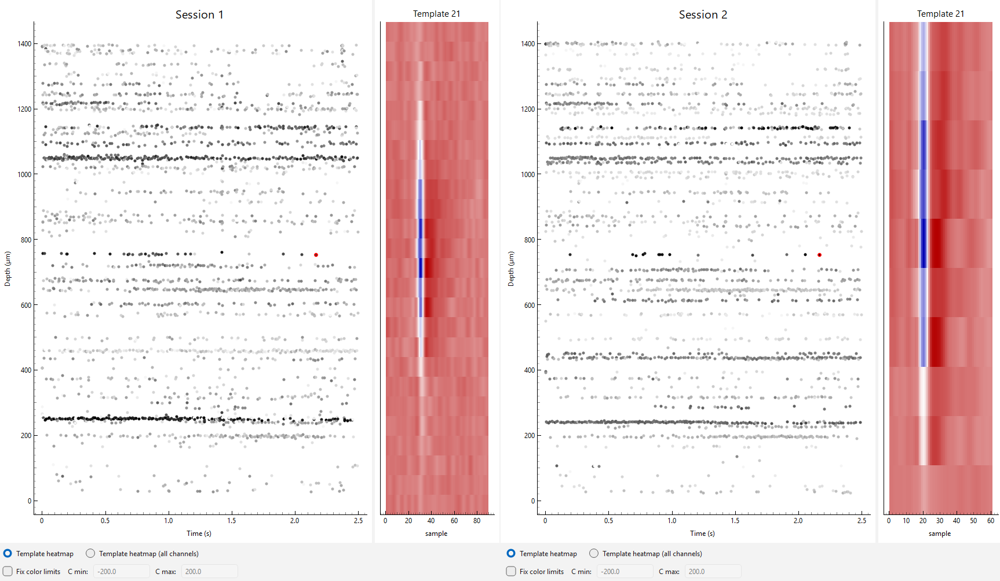
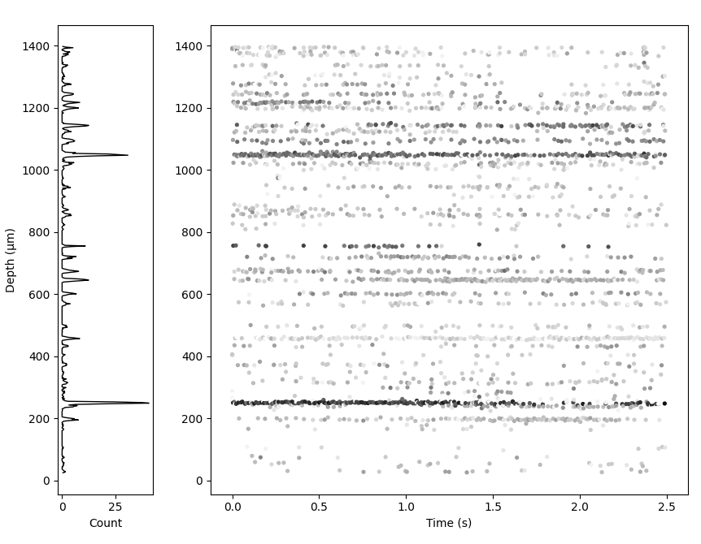

Using driftplots#
driftplots can be used to generate static Matplotlib figures or an interactive viewer (built on Qt).
In the interactive viewer, clicking a spike will display the template (unscaled, whitened) of the
unit that spike is assigned to.
Below we will cover the main ways to use driftplots.
See the API Reference for a full list of arguments.
See here for a glossary of key terms.
Warning
driftplots was designed and tested with Neuropixels probes, but it should also work with most other probes.
Please raise a GitHub issue if you have any problems.
Inputs#
driftplots accepts either a path to the output of Kilosort, or a SpikeInterface SortingAnalyzer as input.
A path to Kilosort 1-4 output is supported.
See here for details on how spike amplitudes,
depths and unit templates are computed across Kilosort versions.
Displayed templates will reflect the unit assignment provided by Kilosort,
and not reflect any later changes in Phy (spike_templates.npy is used for the unit assignments).
If passing a SortingAnalyzer, it is expected that the required extensions
have already been computed. See
this example
for the required extensions. Note that the number of spikes displayed will depend
on the argument set for max_spikes_per_unit used when computing "random_spikes".
By default, the number of spikes displayed will be decimated to around 100,000.
Tip
good_units_only=True is a useful way of excluding spikes from noise and MUA units, tidying up the drift map.
Interactive Viewer#
drift_map_plot_interactive() generates an interactive viewer
allowing the selection of individual spikes on the driftmap. Once selected, the template for the
unit that spike is associated with will be displayed on the right-hand side.
{kind=link}

from driftplots import DriftPlotter
plotter = DriftPlotter(
"/path/to/sorter_output",
)
driftmap = plotter.drift_map_plot_interactive(
good_units_only=True,
)
driftmap.plot()
The displayed templates are whitened and are not scaled per spike, i.e. the template will appear the same for all spikes assigned to the same template. This approach was chosen for two main reasons:
It is not always possible to reconstruct individual waveforms across Kilosort versions (see here)
The main purpose of the interactive mode is to check that waveforms are identifiably similar across sessions. This is easier with templates rather than noisier spike waveforms.
Interactive Viewer with Multiple Plots#
MultiSessionDriftmapWidget can be used to display
multiple interactive plots at once. In this mode, the y-axis
zoom is linked across plots.
See the amplitudes section for details on ensuring amplitude scaling is consistent across sessions.
{kind=link}

import spikeinterface as si
from driftplots import DriftPlotter, MultiSessionDriftmapWidget
from pathlib import Path
# Load the data. In this example we load as a SortingAnalyzer
# or from the raw Kilosort output to demonstrate both methods
data_path = Path("/path/to/example_data")
analyzer = si.load_sorting_analyzer(data_path / "analyzer.zarr")
sorting_output_path = data_path / "sorting" / "sorter_output"
# Create a list of interactive plots, and collect them
# into a single plot using MultiSessionDriftmapWidget
panels = []
for title, path_or_analyzer in zip(
["Session 1", "Session 2"],
[analyzer, sorting_output_path]
):
plotter = DriftPlotter(path_or_analyzer)
plot = plotter.drift_map_plot_interactive(title=title)
panels.append(plot)
multi = MultiSessionDriftmapWidget(panels)
multi.plot()
Matplotlib Mode#
drift_map_plot_matplotlib() returns a static Matplotlib figure. It
takes all the same arguments as the interactive viewer
but can additionally plot a 1D activity histogram next to the driftmap.
{kind=link}

import matplotlib.pyplot as plt
import spikeinterface as si
from driftplots import DriftPlotter
analyzer = si.load_sorting_analyzer("/path/to/analyzer.zarr")
plotter = DriftPlotter(analyzer)
fig = plotter.drift_map_plot_matplotlib(
add_histogram_plot=True,
weight_histogram_by_amplitude=True,
)
plt.show()
See this example for how to stitch Matplotlib figures together across an experimental project into a PDF, to quickly assess recording quality and stability.
Aligning Amplitudes Across Sessions#
driftplots provides options for excluding spikes based on their
amplitudes. Options are also provided to adjust the color map scaling based on the amplitudes.
This can be useful when a small number of high- or low-amplitude
spikes dominate the color scaling i.e. there are a few very dark and/or light spots with the rest grey.
It aids comparison to apply the same amplitude filtering and colormap
scaling to all plots when comparing multiple sessions. get_amplitudes()
can be used to pool amplitudes across sessions, allowing cutoffs to be calculated
across all sessions and applied to all plots.
import numpy as np
import spikeinterface as si
from driftplots import DriftPlotter, MultiSessionDriftmapWidget, get_amplitudes
analyzer = si.load_sorting_analyzer("/path/to/an/analyzer.zarr")
SORTING_SESSIONS = [
"/path/to/a/sorting",
analyzer
]
all_spike_amplitudes = get_amplitudes(
SORTING_SESSIONS, good_units_only=True, concatenate=True
)
min_cutoff, max_cutoff = np.percentile(all_spike_amplitudes, (0, 95))
panels = []
for path_or_analyzer in SORTING_SESSIONS:
plotter = DriftPlotter(path_or_analyzer)
plot = plotter.drift_map_plot_interactive(
filter_amplitude_mode="absolute",
filter_amplitude_values=(min_cutoff, max_cutoff),
amplitude_cmap_scaling=(min_cutoff, max_cutoff),
n_color_bins=25,
)
panels.append(plot)
multi = MultiSessionDriftmapWidget(panels)
multi.plot()